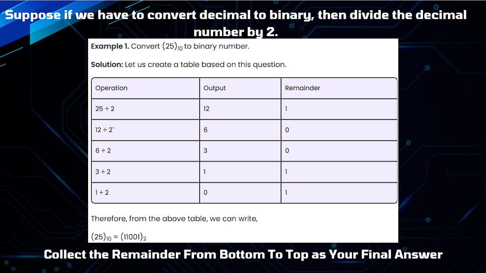

Understanding the Foundations of Computing
Definition: A number system is a method of representing numbers using a specific base or radix. It is a structured format that helps express values for mathematical and computational operations, where the base determines how numbers are arranged.
Composed of ten digits: 0, 1, 2, 3, 4, 5, 6, 7, 8, and 9. The value of a number depends on the position of its digits, each representing a power of 10.
Example: 523 = (5 × 100) + (2 × 10) + (3 × 1)
Uses only two digits: 0 and 1, known as bits. The value is determined by the position of its digits, each representing a power of 2.
Example: 1011 in binary equals 11 in decimal.
Uses eight digits: 0, 1, 2, 3, 4, 5, 6, and 7. The value is determined by the position of its digits, each representing a power of 8.
Example: 157 in octal equals 111 in decimal.
Uses sixteen digits: 0-9 and A-F. The value is determined by the position of its digits, each representing a power of 16.
Example: 1A3 in hexadecimal equals 419 in decimal.
Uses: Everyday applications like money, time, and measurements. It is the standard system for arithmetic operations and data representation for humans.
Significance: It is the most intuitive and widely used system, forming the basis for mathematics and commerce.
Uses: Computers, digital systems, and programming. Every computation and data storage in electronic devices rely on binary numbers.
Significance: Essential in digital technology for representing two states (on and off), forming the foundation of all digital operations.
Uses: Simplifies binary code by grouping binary digits into threes. Historically used in early computer systems like Unix for easier programming and debugging.
Significance: While not widely used today, octal is helpful for simplifying complex binary sequences in specific computing applications.
Uses: Common in programming, particularly for representing binary data in a more readable form. Also used in web development for color coding and addressing memory locations in computing.
Significance: Its compact representation makes it efficient for handling large binary numbers, useful in graphics design and low-level programming.
Decimal to Binary: Convert a decimal number into binary.
Decimal to Octal: Convert a decimal number into octal.
Decimal to Hexadecimal: Convert a decimal number into hexadecimal.
Binary to Decimal: Convert binary numbers into decimal.
Octal to Decimal: Convert octal numbers into decimal.
Hexadecimal to Decimal: Convert hexadecimal numbers into decimal.
Hexadecimal to Binary: Convert hexadecimal numbers into binary.
Octal to Binary: Convert octal numbers into binary.
Octal to Hexadecimal: Convert octal numbers into hexadecimal.
Hexadecimal to Octal: Convert hexadecimal numbers into octal.
Number systems serve as the foundation for many disciplines, including mathematics, engineering, and computer science. Whether it is decimal, binary, octal, or hexadecimal, each system has a specific function and significance in various applications. Number systems are essential not only for understanding basic arithmetic but also for making sense of the complex world of computing and digital technology.
For example, we utilize the decimal number system on a daily basis without thinking about it. When we are young, we use this system to tell time, count objects, and handle money. It is intuitive due to its alignment with our 10 fingers, and we frequently fail to notice how natural it is because it is embedded in our daily routines. But as we venture into the world of computing, this familiarity fades, and we have to modify our conceptions to make room for systems that are more efficient for machines. Now introducing you to the computer language, the Binary Number System. Binary is ideal for digital devices since it just uses two digits: 0 and 1. This means that computers can store and interpret data using basic on-and-off signals.
I've realized as a student of computer science how important it is to understand these many number systems. Working with these systems can be intimidating at first, but once you know why they're there, it's easy to see why they're there. For instance, people may find it difficult to understand or comprehend lengthy binary sequences, even though binary is effective for computer operations. Hexadecimal and octal number systems are useful in this situation. These systems provide more condensed binary data representations, which facilitate program debugging and massive data handling. In fact, because hexadecimal can represent vast amounts of data concisely, it is commonly used in programming.
Technically speaking, the power of binary operations in digital electronics is demonstrated by their simplicity. Data processing with binary is extremely efficient because a single binary digit, or bit, can represent two states. In contrast, hexadecimal is far more useful to humans. It has become widely used in computer programming and design because it makes dealing with big binary numbers simpler to comprehend and handle.
This exploration into number systems has not only deepened my appreciation for how humans and machines handle numbers differently, but it has also given me a greater understanding of how these systems support technological advancement. While decimal is ideal for everyday tasks, binary, octal, and hexadecimal are vital when it comes to technology. Understanding these distinctions strengthens my foundation in computing and helps me see the crucial role these systems play in driving innovation forward.